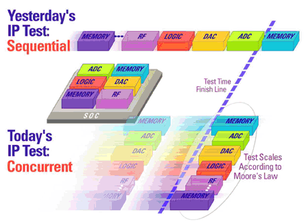
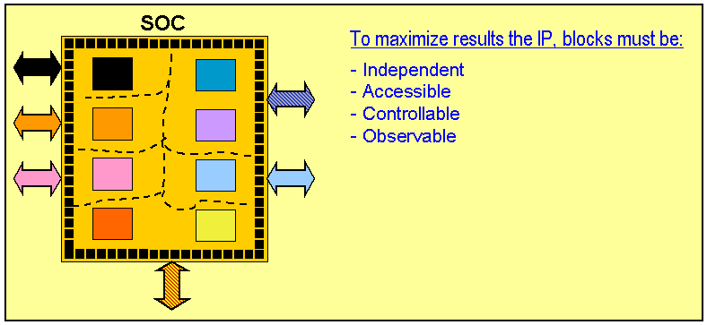

DFT requirements

Concurrent test (CCT) is a test methodology addressing customer needs of reduced test time, increased utilization of tester resources, and better test coverage.
Enabled by industry changes and the introduction of SOC devices, CCT can be applied to a number of applications.
The main principle of Concurrent test, is IP core isolation, proper core positioning on the die for noise and thermal effect reasons, and sufficient power to handle simultaneous multiple core activation. Core isolation may be available by default such as in Multi-Chip- Modules/Packages and SIPs. In many SOC devices, core isolation needs to be planned and designed following EDA guidelines and marketing needs.
The main requirement of CCT related to core isolation is independent access, control, and observability of the tested cores.

Modular IP core test development
New device designs may leverage IP cores from previous devices. Designing reusable tests for these IP cores is also beneficial by saving test development time. In a concurrent test, the pins of independently accessible IP cores are represented by a port.
Port definition
A port is a collection of digital pins (one or more) defined for an independently accessible IP core. Each port can execute an independent sequencer program, which enables parallel IP core test execution. While analog pins are not defined in ports, digital pins can drive the analog instruments in parallel. Modular hardware architecture provides this flexibility for independent test execution.
One suggestion for IP core reuse in a device suited for CCT is that the pin names and port names should remain unchanged. While it is possible to change pin or port names from one device to the next, this requires extra effort in defining the setup files and vectors for the device test.
Functional changes
- Introduced before SmarTest 6.3.2